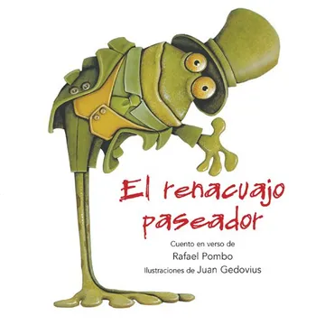

Este cuento narra la historia de un renacuajo que decide salir a pasear y vivir aventuras, pero termina en una situación desafortunada.
Extracto: "Un día de primavera, muy risueño y placentero, paseaba el hijo de Rana, un famoso caballero."
Este cuento nos enseña sobre las consecuencias de nuestras decisiones.
Volver a la actividad Rafael Pombo